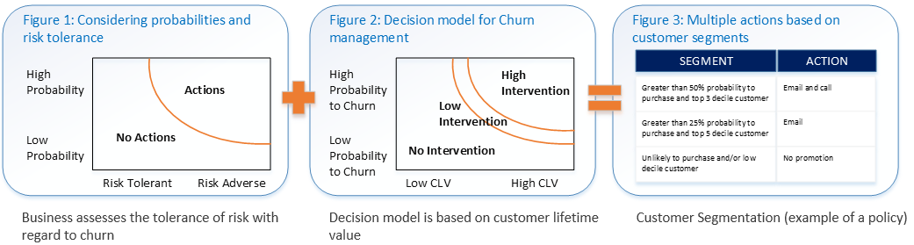
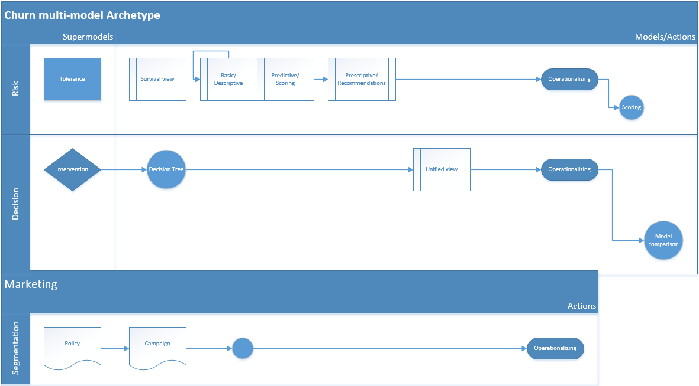
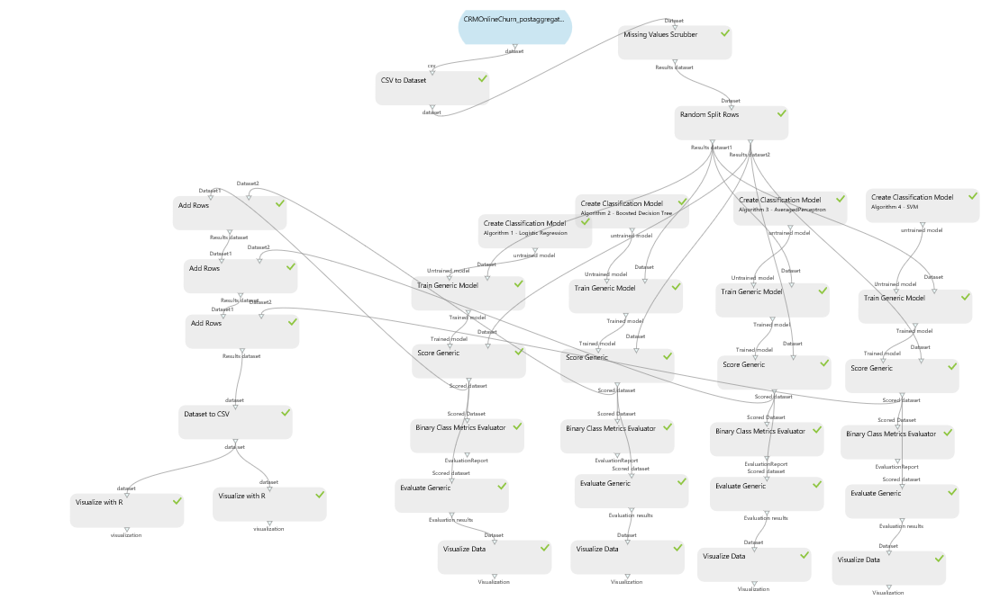

|
<< Click to Display Table of Contents >> Navigation: »No topics above this level« Churn Predictor |
This topic presents a reference implementation of a customer churn analysis project that is built by using Azure Machine Learning Studio. It discusses associated generic models for holistically solving the problem of industrial customer churn. We also measure the accuracy of models that are built by using Machine Learning, and we assess directions for further development.
Acknowledgements
This experiment was developed and tested by Serge Berger, Princial Data Scientist at Microsoft, and Roger Barga, formerly Product Manager for Microsoft Azure Machine Learning. The Azure documentation team is grateful to them for sharing their learnings in this white paper.
The problem of customer churn
Businesses in the consumer market and in all enterprise sectors have to deal with churn. Sometimes churn is excessive and influences policy decisions. The traditional solution is to predict high-propensity churners and address their needs via a concierge service, marketing campaigns, or by applying special dispensations. These approaches can vary from industry to industry and even from a particular consumer cluster to another within one industry (for example, telecommunications).
The common factor is that businesses need to minimize these special customer retention efforts. Thus, a natural methodology would be to score every customer with the probability of churn and address the top N ones. The top customers might be the most profitable ones; for example, in more sophisticated scenarios, a profit function is employed during the selection of candidates for special dispensation. However, these considerations are only a part of the holistic strategy for dealing with churn. Businesses also have to take into account risk (and associated risk tolerance), the level and cost of the intervention, and plausible customer segmentation
Industry outlook and approaches
Sophisticated handling of churn is a sign of a mature industry. The classic example is the telecommunications industry where subscribers are known to frequently switch from one provider to another. This voluntary churn is a prime concern. Moreover, providers have accumulated significant knowledge about churn drivers, which are the factors that drive customers to switch.
For instance, handset or device choice is a well-known driver of churn in the mobile phone business. As a result, a popular policy is to subsidize the price of a handset for new subscribers and charging a full price to existing customers for an upgrade. Historically, this policy has led to customers hopping from one provider to another to get a new discount, which in turn, has prompted providers to refine their strategies.
High volatility in handset offerings is a factor that very quickly invalidates models of churn that are based on current handset models. Additionally, mobile phones are not only telecommunication devices; they are also fashion statements (consider the iPhone), and these social predictors are outside the scope of regular telecommunications data sets.
The net result for modeling is that you cannot devise a sound policy simply by eliminating known reasons for churn. In fact, a continuous modeling strategy, including classic models that quantify categorical variables (such as decision trees), is mandatory.
Using big data sets on their customers, organizations are performing big data analytics (in particular, churn detection based on big data) as an effective approach to the problem. You can find more about the big data approach to the problem of churn in the Recommendations on ETL section.
A common problem-solving process to solve customer churn is depicted in Figures 1-3:
A risk model allows you to consider how actions affect probability and risk.
An intervention model allows you to consider how the level of intervention could affect the probability of churn and the amount of customer lifetime value (CLV).
This analysis lends itself to a qualitative analysis that is escalated to a proactive marketing campaign that targets customer segments to deliver the optimal offer.

This forward looking approach is the best way to treat churn, but it comes with complexity: we have to develop a multi-model archetype and trace dependencies between the models. The interaction among models can be encapsulated as shown in the following diagram:

Interaction between the models is key if we are to deliver a holistic approach to customer retention. Each model necessarily degrades over time; therefore, the architecture is an implicit loop (similar to the archetype set by the CRISP-DM data mining standard, [3]).
The overall cycle of risk-decision-marketing segmentation/decomposition is still a generalized structure, which is applicable to many business problems. Churn analysis is simply a strong representative of this group of problems because it exhibits all the traits of a complex business problem that does not allow a simplified predictive solution. The social aspects of the modern approach to churn are not particularly highlighted in the approach, but the social aspects are encapsulated in the modeling archetype, as they would be in any model.
An interesting addition here is big data analytics. Today's telecommunication and retail businesses collect exhaustive data about their customers, and we can easily foresee that the need for multi-model connectivity will become a common trend, given emerging trends such as the Internet of Things and ubiquitous devices, which allow business to employ smart solutions at multiple layers.
Implementing the modeling archetype in Machine Learning Studio
Given the problem just described, what is the best way to implement an integrated modeling and scoring approach? In this section, we will demonstrate how we accomplished this by using Azure Machine Learning Studio.
The multi-model approach is a must when designing a global archetype for churn. Even the scoring (predictive) part of the approach should be multi-model.
The following diagram shows the prototype we created, which employs four scoring algorithms in Machine Learning Studio to predict churn. The reason for using a multi-model approach is not only to create an ensemble classifier to increase accuracy, but also to protect against over-fitting and to improve prescriptive feature selection.
